尺度
SCALE · Likert 尺度 (1~N から一つを選択)
尺度フィールドとは
- 1.1フィールドの追加と属性パネルの構成
1.1フィールドの追加と属性パネルの構成
概要
尺度(SCALE) は、決められた数字の中から一つを選ぶ Likert 尺度の入力です。痛みの程度 · 満足度 · 重症度のように段階で答える項目に使用します。数字が表示されますが、自由に入力する欄ではなくボタンであり、保存される値はユーザーが選んだ整数一つです。選ばなければ値は空のままです。数値を直接入力させる必要がある場合は数値タイプを、文字の選択肢が必要な場合は単一選択系のタイプを使用します。
画面説明
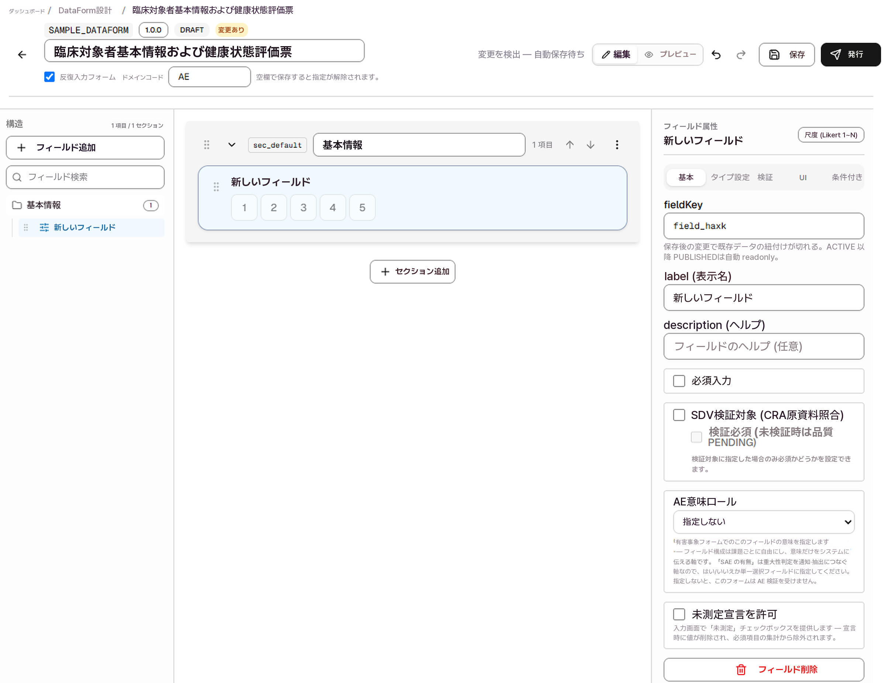
[+ フィールド追加] — ここでタイプを指定するとフィールドが作成されます。
構造ツリーに新しいフィールドが追加されます。
WYSIWYG キャンバスに選択ボタンが一列に表示されます。最初は 1~5 の五つで、個数と範囲はタイプ設定で変更します。3.2
fieldKey — 値が保存される実際のキーです。2.1
label (表示名) · description (ヘルプ) — 画面に表示される名前と補足説明です。2.1
必須入力 · SDV検証対象 · AE意味ロール · 未測定宣言を許可 — 2章で一つずつ説明します。
タイプバッジ「尺度 (Likert 1~N)」 — 選択したフィールドのタイプです。追加した後は変更できません。
属性タブ 5種 — 基本 · タイプ設定 · 検証 · UI · 条件付き。このマニュアルでは、そのうち検証タブを扱いません — 選択肢から選ぶ方式のため、値の検証が成り立たないからです。(6.1「扱っていないもの」)
注意事項
必須確認 データ破損 · フォーム完了不可
- • タイプは追加した後に変更できません。誤って選択した場合は、フィールドを削除して再度追加してください。(テーブル型 · フィールドグループの下位項目のみ例外としてタイプを変更できます。)
- • 保存される値は数字です。「ほぼ痛くない」のような両端ラベルは画面にのみ表示され、データには選んだ整数(例:
3)だけが入ります。抽出データを読む人がその数字の意味を分かるように、尺度の定義をプロトコルにあわせて記録してください。 - • 発行(PUBLISH)後は構造を変更できません。運用中に修正が必要な場合は、新しいバージョンを発行してください。
誤解しやすい動作
- • 設定を変更すると、上部に「変更を検出 — 自動保存待ち」が表示されます。しばらくすると自動保存されます。[保存] を選択してすぐに保存することもできます。元に戻す操作は
Ctrl+Zです。
基本タブ — 名前 · 必須 · 検証対象 · 未測定
- 2.1fieldKey · 表示名 · ヘルプ
- 2.2必須入力
- 2.3SDV検証対象 (CRA原資料照合)
- 2.4未測定宣言を許可
2.1fieldKey · 表示名 · ヘルプ
概要
フィールドの名前を決める領域です。保存キー(fieldKey)と画面に表示される名前(label)は別々の値であり、変更してよいタイミングが異なります。
画面説明
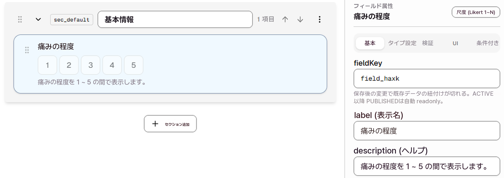
label (表示名) — 入力画面に表示する項目名を入力します。
キャンバスのフィールドタイトルとして表示されます。
description (ヘルプ) — 表示名の下に表示する補足説明を入力します。空欄にすると表示されません。
選択ボタンの下にグレーの文字で表示されます。
fieldKey — 値が保存される実際のキーです。フィールドを追加すると field_haxk のように自動で付与され、英字 · 数字 · アンダースコアで変更できます。画面には表示されません — 下記の注意事項を必ず確認してください。
注意事項
必須確認 データ破損 · フォーム完了不可
- • ⛔ 保存した後は fieldKey を変更しないでください。画面の案内のとおり「保存後の変更で既存データの紐付けが切れる」 — すでに入力された値が新しいキーと結び付かず、事実上失われます。
- • 尺度ではヘルプが特に重要です。数字だけが表示されるタイプなので、どちらが重い側なのかを文字で知らせないと、記録者によっては方向を逆に理解することがあります。ヘルプ2.1と helpText4.4 をあわせて活用してください。
- • フォームが ACTIVE 以降 PUBLISHED 状態になると、fieldKey 入力欄は自動で読み取り専用になります。システムが変更を防ぐのはそれ以降なので、それまではユーザー自身が注意する必要があります。
誤解しやすい動作
- • 表示名はいつ変更しても安全です。保存キーではなく画面の文言だからです。
2.2必須入力
概要
この項目を必ず選択する必要があるかを決めます。選択すると、入力画面でどのボタンも選ばなかったときに保存がブロックされます。
画面説明
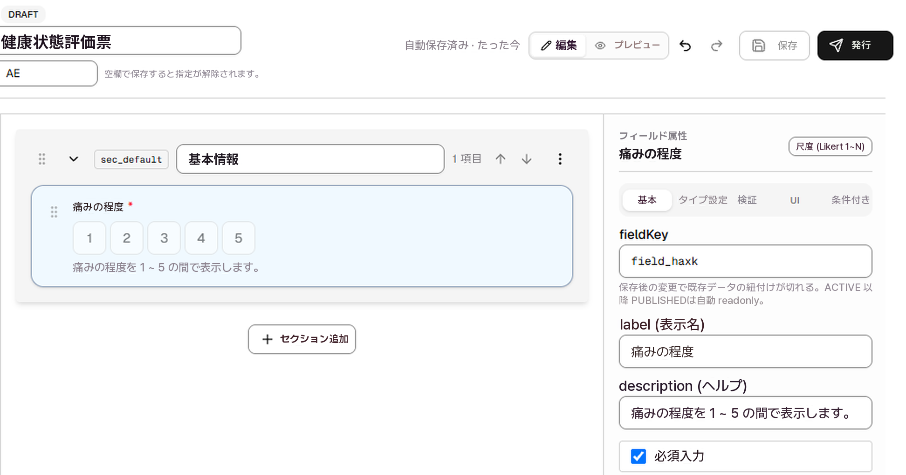
必須入力 — 選択すると、このフィールドが必須になります。
キャンバスの表示名の右に赤いアスタリスク(*)が表示され、ユーザーに必須であることを知らせます。
注意事項
必須確認 データ破損 · フォーム完了不可
- • 尺度には「該当なし」の選択肢がありません。ボタンは min から max までの数字だけなので、症状のない被験者には選ぶものがありません。そのようなケースが生じる項目であれば、① min を 0 にして「0 = なし」を選択肢に含めるか、② 条件付き表示で該当する人にだけ尋ねるか 5章、③ 未測定宣言を許可してください2.4。三つのうちいずれかを決めずに必須に指定すると、フォームを完了できません。
- • 条件付き表示で非表示になったフィールドは、必須検証が免除されます。5章 一方、UIタブの非表示は除外されないため、混同しないでください。4.3
誤解しやすい動作
- • 未測定宣言を許可した場合、ユーザーが宣言すると、そのフィールドは必須集計から除外されます。2.4
参考
- • 必須かどうかはフォーム完了判定に使用されます。どのボタンも選ばなければ、値は空として処理されます。
2.3SDV検証対象 (CRA原資料照合)
概要
SDV(Source Data Verification) は、臨床開発モニター(CRA)が入力値を医療機関の原資料と照合する手順です。このフィールドをその対象に指定するかどうかを、ここで決めます。この設定はすべてのフィールドタイプで共通なので、画面もタイプに関係なく同じです。
画面説明

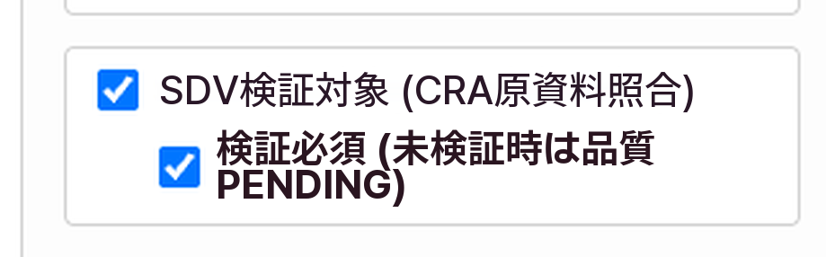
SDV検証対象 (CRA原資料照合) — 選択すると、このフィールドが CRA の照合リストに含まれます。
選択状態に変わると、下位項目が有効になります。
検証必須 (未検証時は品質 PENDING) — ①を選択した後でなければ指定できません。選択すると、CRA が照合を終えるまで、そのデータの品質ステータスが PENDING のままになります。
①を選択する前は、②が薄く表示されて無効です。画面の案内のとおり「検証対象に指定した場合のみ必須かどうかを設定できます。」
注意事項
必須確認 データ破損 · フォーム完了不可
- • 値が変更されると検証が解除されます。すでに VERIFIED のフィールドの選択を変えると、品質ステータスが PENDING に戻り、CRA が再度照合する必要があります。
誤解しやすい動作
- • SDV は入力した本人が実施することはできません。システムがクロス検証(Cross-User SoD)を強制するため、入力者と検証者は必ず別の人である必要があります。
- • 被験者が自分で答える尺度(患者報告アウトカム)は、照合する原資料がない場合があります。調査票の原本が残る場合にのみ SDV 対象に指定するのが現実的です。
参考
- • 品質ステータスは PENDING → VERIFIED → CLEAN の順に進みます。検証必須に指定したフィールドが一つでも未検証であれば、そのデータは CLEAN になりません。
2.4未測定宣言を許可
概要
評価を実施できなかった場合を値として区別して記録する機能です。どのボタンも選ばなければ、「まだ回答していない」と「評価できなかった」を区別できません。この宣言がその二つを区別します。
画面説明
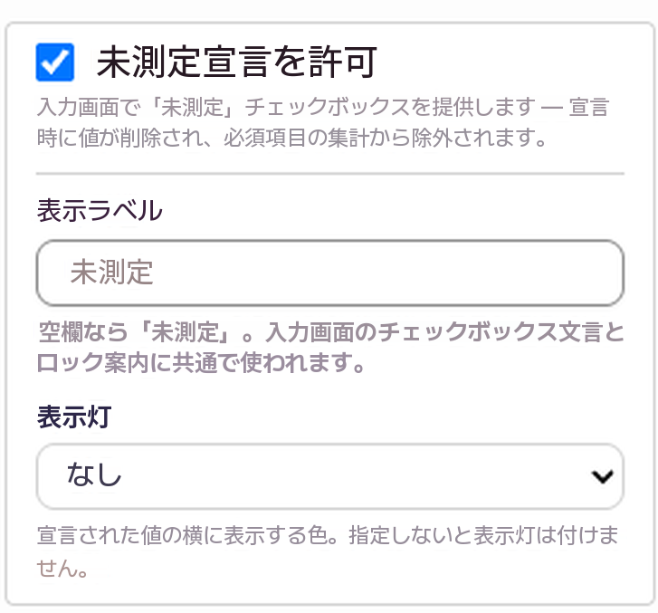
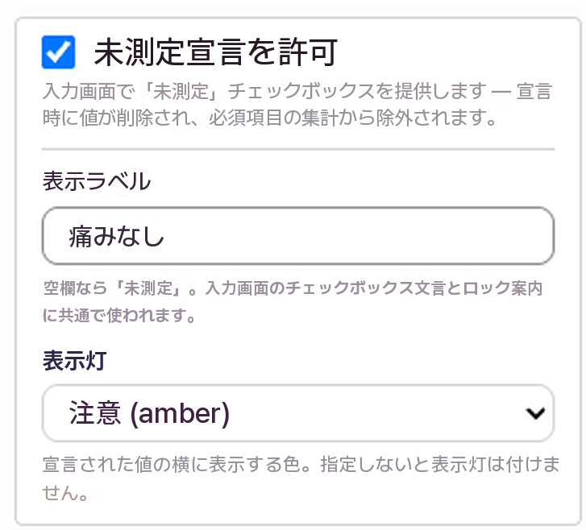
未測定宣言を許可 — 選択すると、入力画面に「未測定」チェックボックスが作成され、下の二つの項目が表示されます。
表示ラベル — 空欄にすると、デフォルト値「未測定」が適用されます。
文言を変えると、入力画面のチェックボックスとロック案内の両方にその文言が適用されます。
表示灯 — デフォルト値はなしです。
注意(amber) に変更すると、宣言された値の横にその色の表示が現れます。
注意事項
必須確認 データ破損 · フォーム完了不可
- • ⛔ 「症状がない」を未測定として記録しないでください。キャプチャの表示ラベル
痛みなしは、この落とし穴をそのまま示しています — 痛みがないことは評価結果であり、評価できなかった状態ではありません。未測定として宣言すると値が削除され、必須集計からも外れるため、「痛みなし」という臨床情報が失われます。症状なしを記録する必要がある場合は、min を 0 にして選択肢に含めてください。3.2 - • 宣言すると値が削除されます。画面の案内のとおり — 「宣言時に値が削除され、必須項目の集計から除外されます。」
誤解しやすい動作
- • 未測定は「評価自体が不可能だった場合」に使います。意識低下で痛みを尋ねられなかった場合、来院自体が行われなかった場合などです。表示ラベルもそのような意味が分かるように書いてください (例:
評価不可)。
参考
- • 表示灯を指定しないと、色の表示は適用されません。強調が必要な場合は、注意(amber) などを選択してください。
タイプ設定タブ — 選択肢の構成
- 3.1タイプ設定タブの全体構成
- 3.2選択肢の作成 (min · max · step · 両端ラベル)
- 3.3デフォルト値 (defaultValue)
3.1全体構成
概要
選択肢を作るタブです。他のタイプと異なり長さ · 正規表現 · 単位はなく、どこからどこまで何刻みでボタンを作るかと、両端に付ける説明だけを決めます。このタイプで実際に使用する項目は三つです。
画面説明
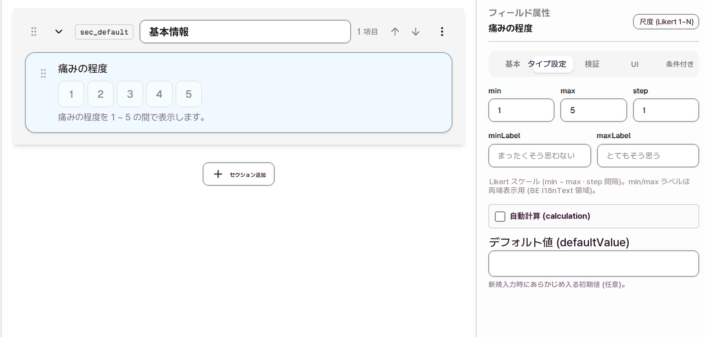
min · max · step — 選択肢の開始 · 終了 · 間隔です。最初から 1 · 5 · 1 が入っているため、そのままにすると 1~5 の五つになります。3.2
minLabel · maxLabel — 両端のボタンにだけ付く説明の文言です。3.2
画面の案内 — 「Likert スケール (min ~ max · step 間隔)。min/max ラベルは両端表示用」
自動計算 (calculation) — 項目は表示されますが、尺度では使用しません。他のフィールドの値から数値を算出する機能なので、数値 タイプで使用してください。
デフォルト値 (defaultValue) — 新規入力時にあらかじめ選んでおく値です。3.3
注意事項
誤解しやすい動作
- • min · max · step は空欄にできません。三つの値がそのまま選択肢になるため、消すとボタンを作れません。他のタイプのタイプ設定項目の多くが「任意」であるのとは異なる点です。
- • 薄い文字で表示される
まったくそう思わない·とてもそう思うは入力例であり、設定された値ではありません。空欄の場合、両端には何の文言も表示されません。 - • このタブには、値の範囲を外れた入力を防ぐ設定はありません。必要がないためです — ユーザーは作成済みのボタンの中からしか選べないため、範囲外の値がそもそも生じません。
参考
- • このタブの構成は、フィールドを作成するときに選択したタイプで固定されます。タイプが異なると、このタブの項目も異なります。
3.2選択肢の作成 (min · max · step · 両端ラベル)
概要
選択肢をいくつ、どの数字で作るかと、両端の意味を決めます。ボタンは min から max まで step 間隔で自動作成されます — キャプチャは 1 から 7 まで 1 刻みなので、7 個になります。
画面説明
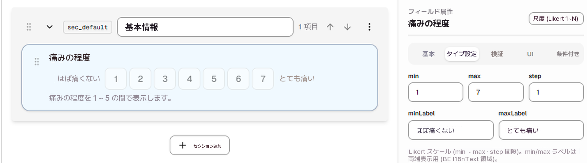
min — 選択肢の開始の数字です。デフォルト値は 1 です。
max — 選択肢の終了の数字です。キャプチャでは 7 に変更し、7 段階の尺度になりました。
step — 数字の間隔です。1 以上である必要があり、通常は 1 をそのまま使用します。
①~③の結果 — キャンバスに 1 2 3 4 5 6 7 のボタンが作成されます。個数は (max − min) ÷ step + 1 で決まります。
minLabel · maxLabel — 両端のボタンに付ける説明です。キャプチャは ほぼ痛くない · とても痛い です。
ボタン列の左右の端にそれぞれ表示されます。中間の数字には何の説明も付きません。
注意事項
必須確認 データ破損 · フォーム完了不可
- • ⛔ 発行した後に尺度の範囲を変更しないでください。1~5 で集めたデータと 1~7 で集めたデータは、同じ
3でも意味が異なります。範囲を変更すると、以前のデータと以後のデータを一つの尺度として分析できなくなります。範囲はプロトコルで確定してから設定してください。 - • ⛔ 「症状なし」を表現する必要がある場合は、min を 0 にしてください。min が 1 だと最も低い選択肢が「少しある」になり、症状のない被験者が選ぶ欄がありません。2.2 · 2.4
- • step を範囲より大きく指定しても、システムは防ぎません。たとえば min 1 · max 5 · step 10 だとボタンが一つしか作られず、尺度の意味がなくなります。保存前にキャンバスでボタンの個数を必ず確認してください。
誤解しやすい動作
- • min が max より大きいと保存が拒否されます。二つの値をあわせて確認してください。
- • 中間の数字の意味は説明されません。両端ラベルだけが表示されるため、段階ごとの定義が必要な場合は helpText に書いてください。4.4
参考
- • 段階数が多いほど回答は細かくなりますが、記録者間のばらつきも大きくなります。臨床的に区別が必要な分だけにしてください。
よく使う構成
| 設定 | 作成される選択肢 | 用途 |
|---|---|---|
| min 1 · max 5 · step 1 | 1 2 3 4 5 | 5 段階 Likert (デフォルト) |
| min 1 · max 7 · step 1 | 1 2 3 4 5 6 7 | 7 段階 Likert (キャプチャ) |
| min 0 · max 10 · step 1 | 0 1 2 … 10 | NRS 痛み尺度 (0 = なし) |
| min 0 · max 4 · step 1 | 0 1 2 3 4 | 重症度グレード (0 = なし) |
3.3デフォルト値 (defaultValue)
概要
新しい入力を始めるときにあらかじめ選んでおく値です。選択肢の中の数字を一つ入力します。
画面説明
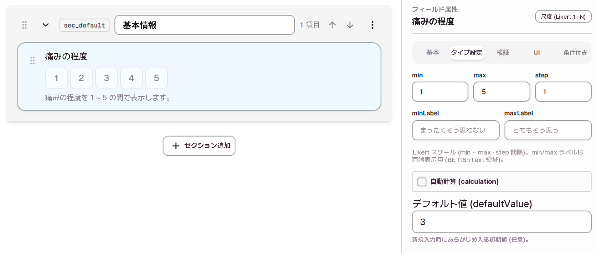
3 — キャンバスのボタンには選択表示が現れないデフォルト値 (defaultValue) — 新規入力時にあらかじめ選択される数字を入力します。(任意)
注意事項
必須確認 データ破損 · フォーム完了不可
- • ⛔ 尺度にはデフォルト値を指定しないことが原則です。尺度は被験者や評価者の主観的な判断を尋ねる項目なので、中間の値があらかじめ選択されていると、その値に引きずられる回答バイアスが生じます。実際に評価したかどうかも区別できなくなります。
- • 選択肢外の数字をデフォルト値にしないでください。たとえば 1~5 の尺度に
7を入れると、選べない値が初期値になります。
誤解しやすい動作
- • キャンバスのプレビューにはデフォルト値が表示されません。キャプチャのように
3を指定しても、ボタン 3 が選択された状態には見えません — 設定が反映されていないのではなく、プレビューが選択状態を描画しないためです。実際の適用は入力画面で確認してください。(値が入る他のタイプとは異なる点です。) - • デフォルト値は、新しく作成する入力にのみ適用されます。すでに保存されたデータは変更されません。
UIタブ — 画面配置と案内文
- 4.1UIタブの全体構成
- 4.2レイアウト幅
- 4.3読み取り専用 · 非表示
- 4.4helpText (ヘルプ)
4.1全体構成
概要
値そのものではなく、画面にどう配置し、どう案内するかを決めるタブです。このタブの設定は、保存されるデータそのものを変更しません。ただし、非表示は画面上で隠すだけで必須集計からは除外されないため、使用する前に 4.3 を確認してください。
画面説明
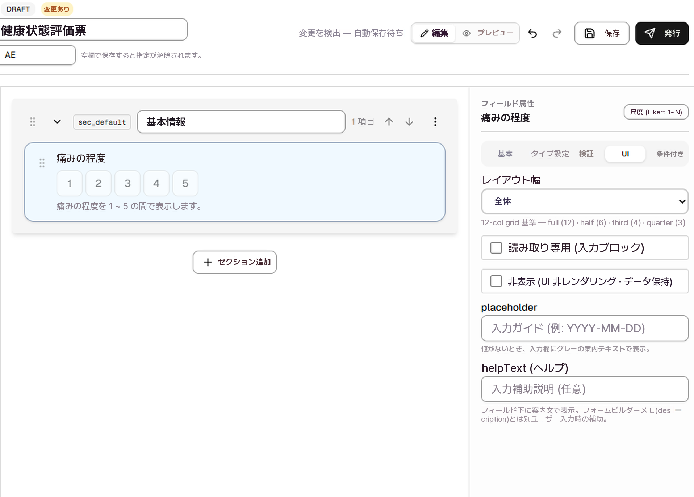
レイアウト幅 — 一行の中でこのフィールドが占める幅です。選択肢の意味は、すぐ下の案内「12-col grid 基準 — full (12) · half (6) · third (4) · quarter (3)」に記載されています。4.2
読み取り専用 (入力ブロック) — 表示はしますが、選択できないようにします。4.3
非表示 (UI 非レンダリング · データ保持) — 画面から隠します。4.3
placeholder — 項目は表示されますが、尺度では適用されません。値がないときに入力欄の中に表示される案内文ですが、尺度には文字を入力する入力欄がないためです。案内が必要な場合は helpText を使用してください。
helpText (ヘルプ) — フィールドの下に表示される案内文です。尺度で最も重要な項目です。4.4
注意事項
必須確認 データ破損 · フォーム完了不可
- • 尺度は案内文に頼るタイプです。画面には数字ボタンしか表示されないため、方向(どちらが重いか)と段階ごとの意味を文字で知らせないと、記録がぶれます。placeholder を使えない分、helpText を必ず入力してください。4.4
参考
- • デフォルト値はレイアウト幅 = 全体、読み取り専用 · 非表示は解除状態です。
- • ボタンのサイズや色を決める設定はありません。画面の幅に合わせて自動で配置されます。
4.2レイアウト幅
概要
一行を12列に分けた12-column grid上で、このフィールドが占める幅を選択します。尺度はボタンが横に並ぶタイプなので、幅を狭めるときは注意が必要です。
画面説明
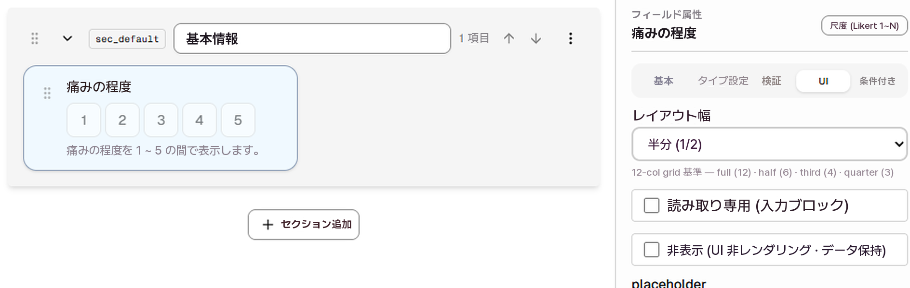
レイアウト幅 — 選択リストから幅を指定します。例は半分 (1/2)です。
キャンバスのフィールドが半分の幅に縮小されます。ボタン 5 個はまだ一行に収まります。
注意事項
必須確認 データ破損 · フォーム完了不可
- • ⛔ 段階が多い尺度は幅を狭めないでください。ボタンと両端ラベルが一行に収まらず、折り返されたり文言が切れたりします。7 段階以上なら 全体 を使用してください。
誤解しやすい動作
- • 幅を狭めると、次のフィールドが同じ行に配置されます。一行の合計が12を超えると、次の行に移ります。
- • 設定を変えた後、キャンバスでボタンが一行に収まるか確認してください。プレビューが実際の配置をそのまま示します。
参考
- • 画面幅が狭い端末では、設定に関係なく一行に一つずつ縦に配置されることがあります。
幅の選択肢
| 選択 | 占める列数 | 一行に配置される数 | 尺度では |
|---|---|---|---|
| 全体 | 12 | 1つ | 段階が多くても安全 — 推奨 |
| 半分 (1/2) | 6 | 2つ | 5 段階程度まで |
| 三分の一 (1/3) | 4 | 3つ | ボタンが折り返されることがある |
| 四分の一 (1/4) | 3 | 4つ | 両端ラベルまで重なって読みにくい |
4.3読み取り専用 · 非表示
概要
フィールドを選択できないようにしたり、表示されないようにしたりします。どちらも、保存された値はそのまま保持されます。
画面説明
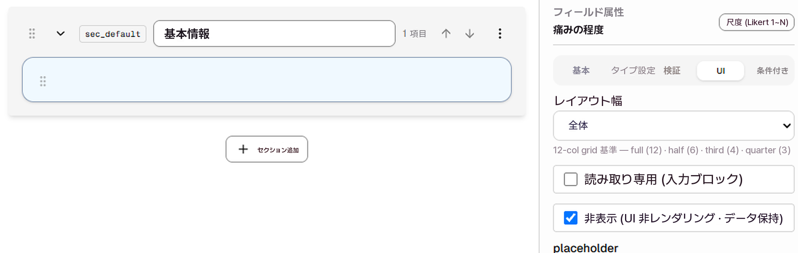
読み取り専用 (入力ブロック) — 選んだ値は表示されますが、ユーザーは変更できません。(このキャプチャでは解除状態)
非表示 (UI 非レンダリング · データ保持) — 入力画面に表示しません。すでに保存された値は削除されません。
キャンバスからフィールドが消え、セクションが空に見えます。
注意事項
必須確認 データ破損 · フォーム完了不可
- • ⛔ 必須項目を非表示にしないでください。UIタブの非表示は画面上で隠すだけで、必須集計からは除外されません — ユーザーが選べない項目が分母に残り、フォームを完了できなくなります。
- • 非表示はデータを削除しません。画面上で消えるだけなので、値を削除するにはフィールドを削除する必要があります。
誤解しやすい動作
- • 条件付きタブの非表示とは異なります。条件が合わずに非表示になったフィールドは、必須集計から除外されます5章。同じ「非表示」という表現を使いますが、検証での扱いが正反対なので、区別してください。
- • 読み取り専用と非表示は異なります。読み取り専用は「見せるが変更できない」、非表示は「見せない」です。すでに回答した段階を確認させる必要がある場合は、読み取り専用を使用してください。
参考
- • 非表示にしても構造パネルにはそのまま残っています — 再度選択して設定を元に戻せます。
4.4helpText (ヘルプ)
概要
フィールドの下に付く案内文です。数字ボタンしか表示されない尺度では、この文言が記録の一貫性を左右します。入力を始めても消えないため、評価基準を書いておくのに適しています。
画面説明
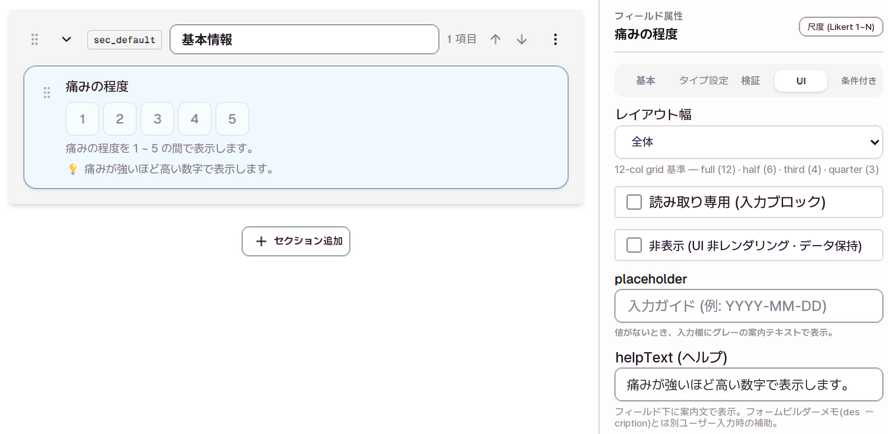
helpText (ヘルプ) — フィールドの下に表示する案内文を入力します。キャプチャは 痛みが強いほど高い数字で表示します。 で、尺度の方向を知らせています。
フィールドの下に電球アイコン(💡)と一緒に表示されます。ユーザーが値を選んでも消えません。
placeholder は空欄です — 尺度には適用されない項目です。4.1
注意事項
必須確認 データ破損 · フォーム完了不可
- • 方向を必ず書いてください。「強いほど高い数字」のように一文だけでも、記録者が尺度を逆に理解する事故を防げます。尺度で最もよくある誤りです。
- • 中間の段階の意味はここに書きます。両端ラベル3.2は二つだけなので、3 段階目 · 4 段階目の定義が必要な場合は helpText にあわせて書いてください。
誤解しやすい動作
- • description と helpText は別々の項目です。画面の案内のとおり — helpText は「フォームビルダーメモ(description)とは別 — ユーザー入力時の補助」です。両方を入力すると、二行が一緒に表示されます。
案内文 4 種の役割
| 項目 | 表示位置 | 尺度では | 設定場所 |
|---|---|---|---|
| helpText | フィールドの下 (💡) | 評価基準 · 方向を書く | UIタブ |
| description | 表示名の下 | 項目が何を尋ねるかを書く | 基本タブ 2.1 |
| minLabel · maxLabel | ボタン列の両端 | 両端の段階の意味だけを短く | タイプ設定タブ 3.2 |
| placeholder | — | 適用されない | UIタブ |
条件付きタブ — 他の値に応じて表示する
- 5.1条件付き表示の有効化
- 5.2条件の設定
5.1条件付き表示の有効化
概要
他のフィールドの値に応じて、このフィールドを表示したり隠したりする機能です。「痛みの有無 = はい」のときだけ痛みの程度を尋ねるような分岐に使用します — 尺度に最も適した機能で、該当しない被験者に選べないボタンを見せずに済みます。
画面説明
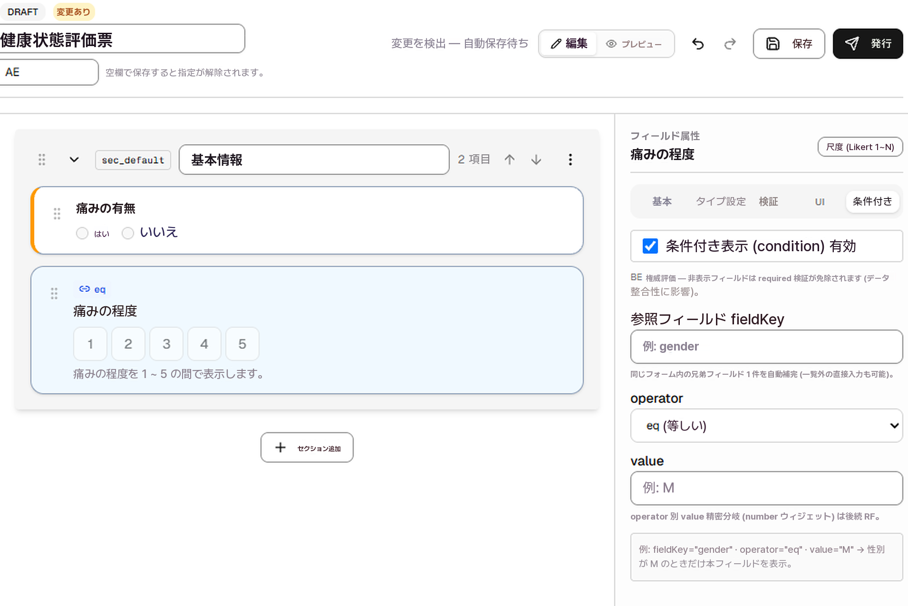
条件付き表示 (condition) 有効 — 選択すると、下の条件設定が表示されます。
キャンバスのフィールドの上に 🔗 eq バッジが表示され、条件が適用されたことを知らせます。
⚠ 画面の案内 — 「非表示フィールドは required 検証が免除されます (データ整合性に影響)。」 条件の判定はシステムが実行します。
参照フィールド fieldKey — 条件の基準となる、同じフォーム内の他のフィールドです。同じフォームの兄弟フィールドが自動補完され、一覧にない値を直接入力することもできます。
operator — 比較方法です。デフォルト値はeq (等しい)です。
value — 比較する値です。
下部の例 — fieldKey="gender" · operator="eq" · value="M" → 性別が M のときだけ本フィールドを表示。
注意事項
必須確認 データ破損 · フォーム完了不可
- • 条件を設定すると、必須検証が免除される場合があります。条件が合わずに非表示になっている間は、そのフィールドが必須であっても空の状態でフォームが完了します。これは不具合ではなく意図された動作です。
- • すでに選んだ値がある状態で条件が偽になると、その値は画面から消えます。分岐の基準となるフィールドを後で変更するときは注意してください。
誤解しやすい動作
- • 「該当なし」の問題を解決する最もすっきりした方法です。症状のある被験者にだけ程度を尋ねるようにすれば、尺度に「なし」の選択肢を無理に入れる必要がなく、必須指定も安全になります。2.2
参考
- • 条件を有効にして参照フィールドを空欄にすると、条件は成立しません。必ず②~④をすべて入力してください。5.2
5.2条件の設定
概要
5.1 で有効にした条件を最後まで入力した状態です。この設定では、「痛みの有無」フィールドの値が 1(はい) のときだけ、この尺度フィールドが入力画面に表示されます。
画面説明
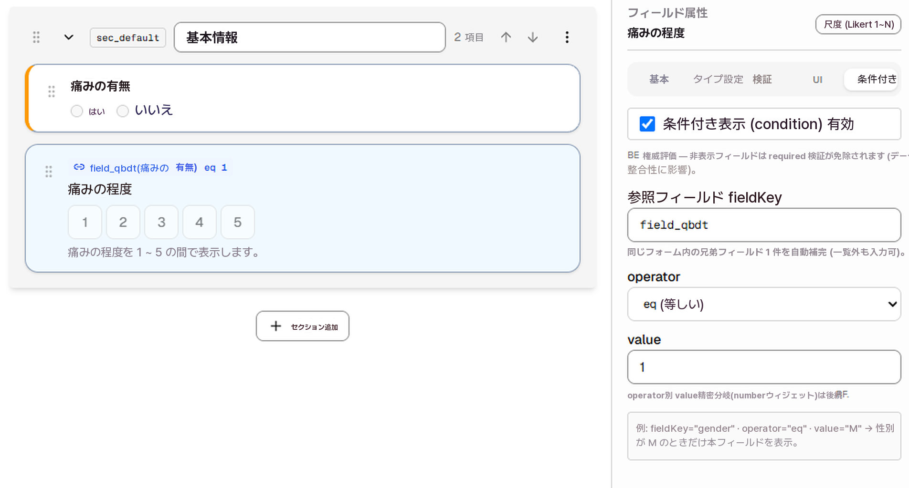
痛みの有無 が 1 のときだけ表示されるように設定した状態参照フィールド fieldKey = field_qbdt — 同じフォームの「痛みの有無」フィールドを指します。
operator = eq (等しい)
value = 1 — 画面に表示される「はい」ではなく、その選択肢に保存される値を入力します。
①~③をすべて入力した結果 — キャンバスのバッジが 🔗 field_qbdt(痛みの有無) eq 1 に具体化されます。どのような条件かをすぐに確認できます。
下部の例 — fieldKey="gender" · operator="eq" · value="M" → 性別が M のときだけ本フィールドを表示。
注意事項
必須確認 データ破損 · フォーム完了不可
- • ⛔ value には、画面の文言ではなく保存値を入力します。キャプチャでは参照フィールドが はい / いいえ と表示されていますが、実際の保存値は
1です。「はい」と入力すると条件が永遠に成立せず、このフィールドは最後まで表示されません。参照するフィールドの選択肢の保存値を先に確認してください。 - • 参照フィールドの fieldKey を変更または削除すると、条件が壊れます。条件は表示名ではなく fieldKey で結び付いています。(2.1 の fieldKey の注意事項と同じ理由です。)
誤解しやすい動作
- • 尺度フィールドを参照することもできます。その場合、value には選んだ数字をそのまま書きます (例: 痛みの程度が 4 以上のときだけ追加の設問を表示 — ただし eq は完全に等しいときだけ成立するため、「以上 · 以下」が必要な場合は operator を確認してください)。
参考
- • 条件を使用するとフォームが短くなり、不要な入力が減ります。ただし、条件が互いに衝突すると最後まで表示されないフィールドが生じるため、設定後にプレビューで必ず確認してください。
付録
- 6.1設定項目一覧
6.1尺度フィールドの設定項目一覧
タブ別の設定項目
| タブ | 項目 | 何を決めるか | 本文 |
|---|---|---|---|
| 基本 | fieldKey | 値が保存される実際のキー (保存後の変更禁止) | 2.1 |
| label (表示名) | 画面に表示される項目名 | 2.1 | |
| description (ヘルプ) | 表示名の下の補足説明 | 2.1 | |
| 必須入力 | 必ず選択する必要があるか (「該当なし」の対策を先に) | 2.2 | |
| SDV検証対象 | CRA原資料照合の対象か · 検証必須かどうか | 2.3 | |
| AE意味ロール | 有害事象フォームでこのフィールドが意味するもの | ※ | |
| 未測定宣言を許可 | 「評価不可」を値として残せるか · 表示ラベル · 表示灯 | 2.4 | |
| タイプ設定 | min · max · step | 選択肢の開始 · 終了 · 間隔 (ボタンが自動作成される) | 3.2 |
| minLabel · maxLabel | 両端のボタンにだけ付く説明の文言 | 3.2 | |
| デフォルト値 (defaultValue) | あらかじめ選んでおく数字 (尺度には非推奨) | 3.3 | |
| 自動計算 | このタイプでは使用しない | 3.1 | |
| UI | レイアウト幅 | 12-col grid 上の幅 — 段階が多ければ全体 | 4.2 |
| 読み取り専用 | 表示はするが変更できないように | 4.3 | |
| 非表示 | 画面に表示しない (保存値は保持 · 必須集計には残る) | 4.3 | |
| helpText (ヘルプ) | 評価基準 · 方向 — 尺度で最も重要 | 4.4 | |
| 条件付き | 条件の有効化 | 条件付き表示を使用するかどうか (必須検証の免除) | 5.1 |
| 参照フィールド fieldKey | 条件の基準となる、同じフォームのフィールド | 5.2 | |
| operator · value | 比較方法と比較する値 (保存値を入力) | 5.2 |
必ず覚えておくこと
必須確認 データ破損 · フォーム完了不可
- • 発行した後に尺度の範囲を変更しないでください。1~5 の
3と 1~7 の3は意味が異なります — 前後のデータを一つの尺度として分析できなくなります。3.2 - • 「症状なし」を未測定として記録しないでください。評価結果であり、評価不可ではありません。記録するには min を 0 にしてください。2.4 · 3.2
- • 「該当なし」の対策なしに必須に指定しないでください。min 0 · 条件付き表示 · 未測定宣言のいずれかを先に決めます。2.2
- • 尺度にデフォルト値を設定しないでください。主観的な評価なので、回答がその値に引きずられます。3.3
- • helpText に方向を書いてください。「強いほど高い数字」の一文が、尺度を逆に理解する事故を防ぎます。4.4
誤解しやすい動作
- • 保存される値は数字だけです。両端ラベルは画面の文言であり、データには入りません。1.1
- • デフォルト値を指定しても、キャンバスには選択表示が現れません。設定されていないわけではありません。3.3
参考
- • step を範囲より大きくすると、ボタンが一つしか作られませんが、システムは防ぎません。キャンバスで個数を確認してください。3.2
この文書で扱っていないもの
※ AE意味ロール — 基本タブにありますが、設定手順のキャプチャがないため、別の節を設けていません。有害事象(AE)フォームを使用するプロジェクトでのみ指定します。詳しい使い方は、AE 関連の文書を参照してください。
検証タブ — 属性タブにありますが、尺度では使用しません。検証はユーザーが入力した値が条件に合うかをチェックする機能ですが、尺度は作成済みのボタンの中からしか選べないため、範囲外の値がそもそも生じません。選択肢そのものを変更するには、タイプ設定タブの min · max · step を調整してください。3.2
自動計算 (calculation) — タイプ設定タブに項目が表示されますが、このタイプでは使用しません。他のフィールドの値から数値を算出する機能のため、数値タイプで使用してください。3.1
placeholder — UIタブに項目が表示されますが、適用されません。文字を入力する欄がないタイプだからです。案内は helpText で行ってください。4.1 · 4.4